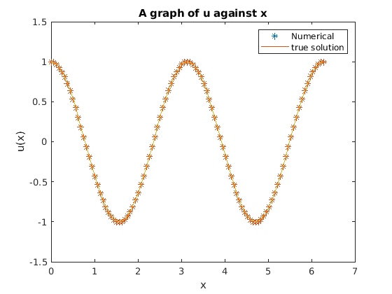
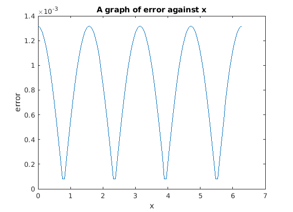

a=0; b=2*pi;
m=99;
h=(b-a)/(m+1);
j=[0:m+1]';
xj=a+j*h;
k=[1:m+1]';
v=[0.000002;(2*cos((pi*k)/(m+1)))-2];
f=-4*cos(2*xj);
fcap=dct(f);
ucap=(h^2)*fcap./v;
uap=idct(ucap);
L2norm=RelL2Norm(uex,uap);
fprintf('%10s %16.8e\n','Relative two norm =',L2norm);
fprintf('According to the results from the two graphs, we can conclude that the results are the same.');
figure(1);
plot(xj,uap,'*');
hold on;
uex=u_ex(xj);
plot(xj,uex);
legend( 'Numerical','true solution')
ylabel('u(x)');
xlabel('x');
title('A graph of u against x');
figure(2);
err=er(uex,uap);
plot(xj,err);
ylabel('error');
xlabel('x');
title('A graph of error against x');
function uexact=u_ex(xj)
uexact=cos(2*xj);
end
function error=er(uex,uap)
error=abs(uex - uap);
end
function L2 = RelL2Norm(uex,uap)
R = (uex - uap).^2;
L2 = sqrt(sum(R)/sum(uap.^2));
end
Relative two norm = 1.31525476e-03
According to the results from the two graphs, we can conclude that the results are the same.
 